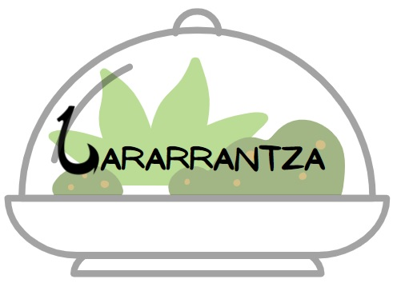

LARARRANTZA
DE LA HUERTA A TU MESA

En Álava contamos un unas huertas insuperables, con unos productos fuera de serie. Por eso nuestro objetivo es acercar al comensal dichos productos, tratados con el mayor mimo y cariño para ofrecer una experiencia única.